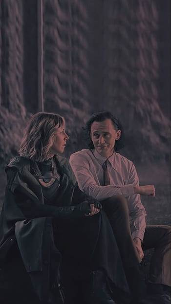

Loki
Also known as the God of Mischief, has become an iconic character in popular culture, thanks in part to his appearances in the Marvel Cinematic Universe. With his mischievous nature and cunning personality, it's only fitting to create a website dedicated to the God of Mischief.Background of Loki
Loki is a Norse god and the adopted brother and arch-nemesis of Thor, the God of Thunder. He is the son of the Frost Giant king Laufey and was adopted by Odin, the king of Asgard.
Power and Abilities
Loki possesses magical powers, making him one of the most powerful sorcerers in the Marvel Universe. He is skilled in illusions, shape-shifting, telepathy, teleportation, energy manipulation, and astral projection.Appearance
 Loki typically appears as a tall and lean figure with long dark hair.
He is known for his trademark green and gold attire, including a horned helmet and a flowing cape.
Loki typically appears as a tall and lean figure with long dark hair.
He is known for his trademark green and gold attire, including a horned helmet and a flowing cape.
Trickster and Manipulator
Loki is known for his cunning, deceitful nature. He frequently employs elaborate schemes and tricks to achieve his goals, often pitting heroes against each other or exploiting their weaknesses.Summary of loki web series
'[ ]'
 season 2 will be updated soon spoiler alert :
season 2 will be updated soon spoiler alert :
Article by Tyseer Alvee
Follow us on instagram (tysu099) for more !Thanks for your patience s2 will be updated soon.
Loki Season 2
updated:
 In the past, the Time Variance Authority (TVA) attempts to apprehend Loki while he is uncontrollably warping across time in their headquarters. In the present, Loki reunites with Mobius M. Mobius and warns him of the threat posed by the many variants of He Who Remains, the TVA's creator. Concurrently, TVA General Dox has several TVA hunters arm themselves, ostensibly to find Sylvie, who caused the Sacred Timeline to branch after killing He Who Remains. Loki and Mobius meet TVA technician Ouroboros, who deduces that Loki is "time slipping", a phenomenon possibly caused by branching timelines dangerously overloading the Temporal Loom. To save Loki, Ouroboros instructs Mobius to approach the Temporal Loom with the Temporal Aura Extractor device to extract Loki from the time stream as Loki prunes himself. Loki time slips to the future, where the TVA is being evacuated as the Loom goes critical, he encounters Sylvie before he is pruned by someone at the last minute. In the present, Mobius successfull y pulls Loki from the time stream, and they set out to find Sylvie. In a mid-credits scene, Sylvie enters a branched timeline in Broxton, Oklahoma, 1982 and visits a McDonald's restaurant.